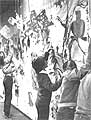

"Children are born with rainbows in their hearts, and you'll never reach them unless you reckon with rainbows. " (Carl Sandburg)
Despite all that's been said about the current crisis in our public schools, the fact remains that little effective action has yet been taken to correct the situation. A majority of children are still bored, restless, and frustrated-often to the point of violence-and "learning" has come to mean little more than adhering to (loose) discipline and following the school's routine. As a result, the chasm continues to widen between administrators responsible for the education of young people and those parents concerned with the impact of this sort of "learning" experience on their children's futures.
Of course, private and parochial institutions are simply out of the question for many folks, and though home schooling is a viable alternative to public education, some parents just don't have the time or the temperament required to teach their youngsters on a one-to-one basis at home. So, for better or for worse, most of us are stuck with the public school system.
If you're in that situation, why not take affirmative action toward improving your children's education? How? By organizing or taking part in a community-sponsored (and staffed ) after-school program, using your local public school's facilities. Here in Tallahassee we've done just that. We call our undertaking the Afterschool Enrichment Program. Our after-hours workshops are proving that a community really can have a positive effect on its schools and, ultimately, on its children's learning (in its true meaning) experiences. Of course, it takes a lot of time, work, and energy to run this sort of program (and once you get it going, not everyone will want to take advantage of it, either). But it can be done, and it can produce a great many rewards at minimum expense.
To give you some idea of what I'm talking about, here's a brief account of the Afterschool: what it is, how it began, and where it may be headed. If after reading this you'd like to know more about us or to exchange ideas on how you might set up a similar program in your area, feel free to write to me (Harold Mayo, The Afterschool, Astoria Park Elementary School, Tallahassee, FL 32303), enclosing a self-addressed, stamped envelope. I'd be happy to consult with you and to send you a descriptive pamphlet we've worked up.
DEFINING THE TERMS
Basically, the Afterschool is a sort of minischool. It consists of a series of innovative courses that are taught by local members of the community (artists, businesspersons, college students, musicians, househusbands and -wives with special skills, and so forth). Designed for youngsters in grades K-5 (with plans to reach older children in the future), the program is currently housed in several public primary and elementary schools in the Tallahassee area. Our overall goal is to provide quality activities that will (it's hoped) stimulate new interests, encourage creativity, build self-confidence, and motivate young people to use their after-school time in a positive and wholesome way.
Each Afterschool has its own coordinator (who works closely with the principal of the school in which he or she is located) and its own staff of instructors, some of whom do rove between schools. Everyone is paid a salary in accordance with his or her experience and responsibilities. Curriculum is based on student and parent interests-as well as the availability of a teacher-and covers a wide range of subjects, including oil painting, ceramics, guitar and violin lessons, and German and French as well as other foreign languages. Students can sign up for as many afternoons and courses as scheduling allows, and they pay a set rate of $4.00 a day for most classes. This fee covers supplies (generally donated by area businesses), an hour and a half of instruction, and a snack. (Parents are asked to supply texts and music sheets.) The schools don't demand "rent" for the use of their space, so the overhead is minimal.
HUMBLE BEGINNINGS
I started the Afterschool seven years ago as a simple (or so I thought at the time!) answer to my unemployment situation: I was a househusband with a new baby to care for, a need to supplement my wife's income, and degrees in German and art. Back then, the program consisted of German lessons on Mondays and Wednesdays and art classes during the other three weekdays, all of which I taught in the basement of a Unitarian church to a total enrollment of 15 students. The church rented the space to me at a very reasonable rate, and the only advertising I did was to walk around handing out fliers door to door in the neighborhood surrounding the church, so my handful of students at $2.00 a head per day wasn't bad under the circumstances. The program was small, but it was innovative . . . and in that sense, exciting!
The experience was so exciting, in fact, that I began to toy with the thought of trying to reach even more children with the Afterschool. Unfortunately, transportation was a real problem: Many parents worked and couldn't shuttle their kids to the church in the middle of the afternoon.
Then an idea hit! Why not move the Afterschool to the children, by relocating it in their schools? That way, no one would have to be driven anywhere . . . since my academy would open as soon as the public schools closed. Classes could be taught in hallways, cafeterias, or whatever areas wouldn't interfere with regular activities. And the Afterschool could make itself available to regular classroom teachers to help with projects they might not have time to get to during the school day (such as making decorations for plays, pageants, and the like).
Once I got my thoughts in order, I enlisted the help of other parents and concerned folks and went to a few public school principals with my proposal. Some were interested right off the bat, while others were more reticent. But after a bit of lobbying, I finally got the go-ahead to place the Afterschool in the schools themselves. Unable to be in six places at once-and because I'd already decided to expand the program-I settled in at Astoria Park Elementary (which was the first school to accept us) and hired other directors to coordinate the additional Afterschool curricula. This let me run my own workshops and, when time allowed, hop back and forth to oversee all of our programs.
PLUS AND MINUS
Working within a school system while trying to remain a separate, though complementary, entity hasn't always been easy. We've had to be extremely conscientious about taking care of the areas we use, always leaving them the same as (or better than) we found them. We try to maintain constant communication with regular teachers to be sure we're always aware of what we're all doing . . . so that lessons aren't repeated and toes aren't stepped on. And we never make a decision concerning space, supplies needed from the school (which are rare), scheduling, hiring of new instructors, and so forth without first conferring with the appropriate principals. (NOTE: We've discovered that our best ally in the "system" is the janitor. This all-knowing individual can be a godsend in a late afternoon emergency situation when no one else is around.)
The problems of dealing with the bureaucracy and red tape of the public school administration are complicated and trying . . . but they are also solvable if the lines of communication are kept open. I wholeheartedly believe that an after-school supplemental education program is worth all the hassles required to maintain it, because a program such as this can become an active means of bridging the giant gap between members of a community and their school system. But even more important, the Afterschool and programs like it have the remarkable potential to remove the routine from learning . . . and in so doing, unleash the rainbows.
|
 |
|
|